地政学
ローマはイタリア共和国の首都で、欧州連合、地中海、北アフリカ、中東への政策視線を持つ。国内南北格差、移民、教皇庁外交も重なり、古都でありながら現代国家の調整軸として働く政治都市である。調整も担う。

🇮🇹 イタリア / ヨーロッパ / World City Atlas
古代帝国、カトリック、共和国政治、映画、観光、移民の暮らしが重なり、ヨーロッパの時間を街路で読ませる首都。
都市の骨格
テヴェレ川、七つの丘、ヴァチカン、環状道路、郊外団地が、観光の表舞台と住民の通勤、行政、信仰を同時に動かしている。
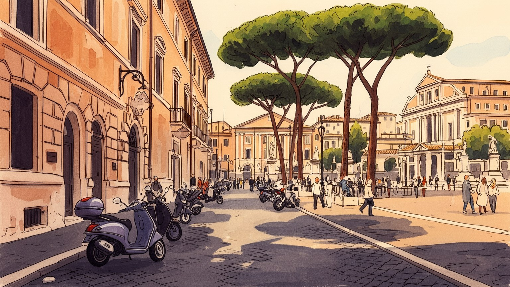
ローマはイタリア共和国の首都で、欧州連合、地中海、北アフリカ、中東への政策視線を持つ。国内南北格差、移民、教皇庁外交も重なり、古都でありながら現代国家の調整軸として働く政治都市である。調整も担う。
行政、観光、映画、放送、大学、医療、食品、交通、宗教関連サービスが雇用を支える。公務と観光収入は厚いが、若者の不安定就労、低賃金、郊外通勤も目立ち、季節労働と専門職が近接する。生活の土台でもある。
古代遺跡、バロック教会、カトリック儀礼、ユダヤ人街、映画、料理、サッカーが都市の記憶を重ねる。信仰は観光資源である前に生活と政治の語彙でもあり、巡礼と日常の祈りが交差する街である。今も街の暦を作る。
住民は観光客の波、住宅費、交通混雑、公共サービスの弱さと向き合いながら、広場、市場、バール、公園を使いこなす。遺産の都は生活都市でもあり、短い旅では見えにくい郊外の重みも大きい。生活の厚みがある。
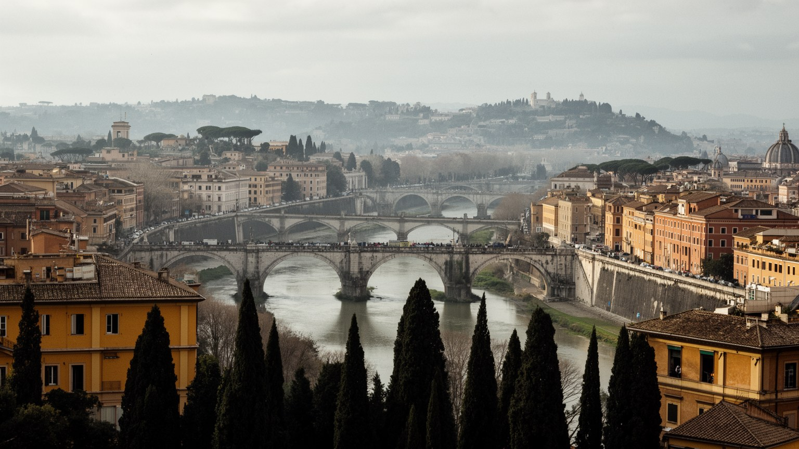
ローマの地理は、テヴェレ川と七つの丘から始まる。川は内陸と海をつなぐ交通路であり、防衛線であり、洪水の記憶を運ぶ境界でもあった。古代の中心は丘の上の聖域と谷の市場を結び、フォロ・ロマーノ、カピトリーノ、パラティーノの周辺に政治、宗教、商業を集めた。現代の都市はこの核を保存しながら、テルミニ駅、環状道路、郊外住宅地、空港、大学地区へ広がっている。名所は徒歩で近く見えても、住民の生活圏は公共交通と車に頼る距離を持つ。堤防や橋は景観を作るだけでなく、川を危険な自然から管理された都市空間へ変えた装置である。丘の起伏は眺望を生み、教会のドームや松並木を印象的に見せる一方、移動の負担や道路の複雑さも生む。ローマを読むには、遺跡を点として眺めず、川、丘、門、街道、郊外をつなぐ地形の連続を追う必要がある。古い街道の向きは郊外のバス路線や住宅地の境界にも残り、中心へ向かう流れを今も強める。水害対策や橋の補修は、歴史景観の保存であると同時に、通勤と防災を守る基礎でもある。夕方の光が丘と川に落ちる時、都市の古い骨格はいまの生活の輪郭として立ち上がる。観光客の歩幅と住民の通勤時間が交差する場所に、ローマの地形の強さと不便さが同時に現れる。坂を上り下りする感覚そのものが、この都市の記憶を身体に刻む街だ。今も。
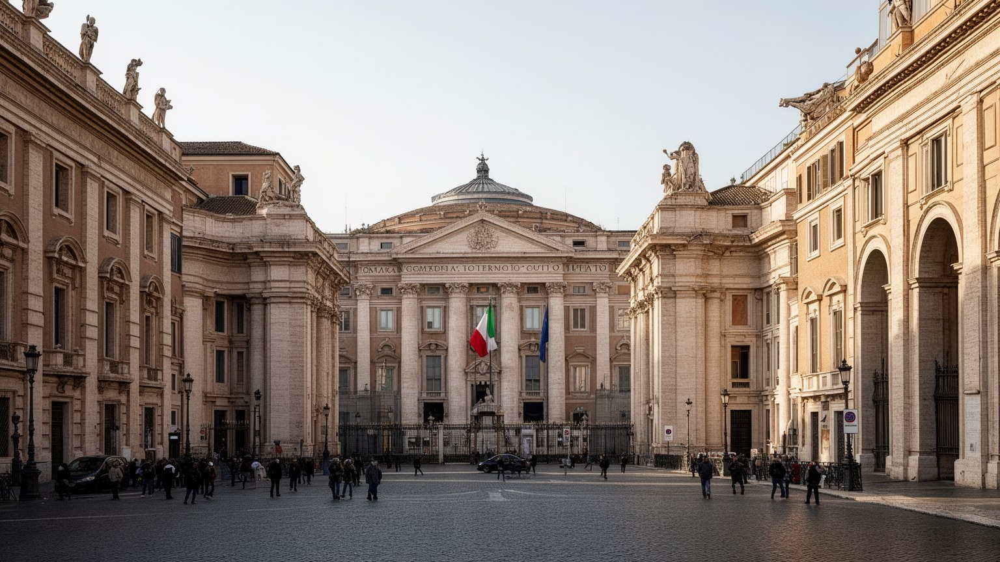
ローマはイタリア共和国の首都として、議会、大統領府、首相府、省庁、最高裁、全国政党、労組、報道機関を集める。ミラノが金融と企業経済の強い中心であるのに対し、ローマは法律、行政、外交、公共支出の配分を通じて国を動かす。統一国家の首都になった歴史は比較的新しく、教皇領の記憶と世俗国家の制度が同じ街路に重なった。政治の課題は北部の産業力、南部の雇用不安、島嶼部、移民、財政規律、EUとの関係まで広い。官庁街や議会周辺ではデモ、記者会見、警備、観光が同じ空間を使い、広場は市民の不満を可視化する舞台にもなる。行政の存在は安定した雇用を生むが、官僚制の遅さや公共サービスへの不信も都市の評判に影を落とす。ローマの政治性は宮殿の背景に閉じず、ゴミ収集、交通、住宅、学校、医療、文化財管理として住民に評価される。選挙のたびに中央政府、州、市の責任が議論され、誰が街の失敗を直すのかが問われる。観光と国政の舞台が重なるため、小さな管理不全も国のイメージに直結しやすい。外交団や国際機関の存在も、首都の会議室を地中海と欧州の課題へ開いている。国家の象徴であるほど、住民が感じる日常の不便も政治問題として鋭く見える。首都で暮らすことは、歴史的な権威と現代行政の弱点を同時に引き受けることでもある重要な日常である。今も。
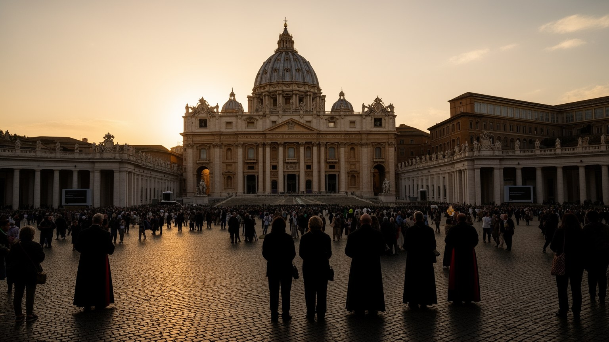
ローマの宗教性は、ヴァチカン市国とカトリック教会の世界的な中心性によって特別な重みを持つ。サン・ピエトロ大聖堂、教皇庁、巡礼路、修道会、大学、慈善組織は、都市を単なるイタリアの首都ではなく、世界の信仰と外交が交差する場所にしている。教皇の言葉は宗教的なメッセージであると同時に、移民、戦争、貧困、気候、家族倫理をめぐる国際的な論点にも関わる。ローマの教会は美術館のように訪問されるが、ミサ、葬儀、結婚、地域の福祉、移民支援、沈黙の祈りを受け止める生活の施設でもある。ユダヤ人街やシナゴーグ、イスラム系住民、東方教会の存在は、信仰の風景を一色にしない。宗教観光は宿泊、飲食、案内、交通を支えるが、神聖な場所が大量の消費にさらされる緊張も抱える。聖堂の鐘、警備の柵、巡礼者の列、近隣住民の買い物が同じ通りに並ぶ点に、ローマらしさがある。聖年や大規模行事の時期には宿泊、交通、警備、清掃が一気に緊張し、宗教都市としての能力が試される。信仰を持たない住民にとっても、教会暦や祝日は学校、仕事、街のリズムに影響する。壮大な祭礼の背後には、孤独な高齢者を訪ねる小さな奉仕もある。祈りの場が世界政治の言葉を発する点も、ローマの特異な力である。宗教は過去の装飾ではなく、福祉、倫理、外交を動かす現在の力であり続ける。
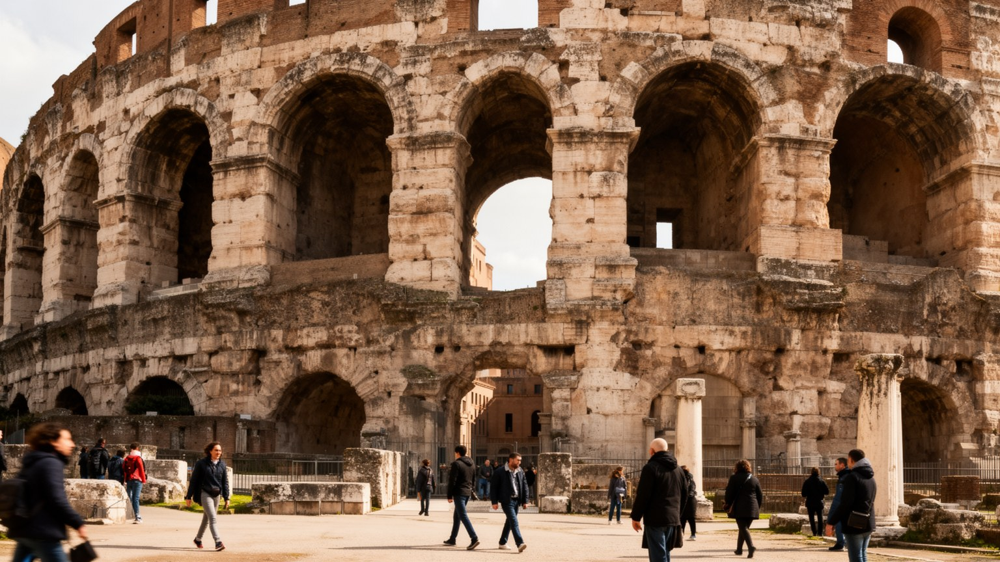
ローマでは古代遺産が都市の中心を占め、日常の移動や開発を強く制約する。コロッセオ、フォロ、パンテオン、水道橋、アッピア街道、浴場跡は、帝国の権力や技術を伝えるだけでなく、現代都市が過去をどう使い、守り、混雑に耐えるかを問う。地下を掘れば考古遺構が現れる可能性があり、地下鉄建設や道路改修は技術だけでなく保存判断を必要とする。観光客は遺跡を壮大な風景として見るが、住民にとっては迂回路、騒音、規制、雇用、誇りが重なった生活条件でもある。文化財は入場料やホテル需要を生む一方、修復費、人流管理、落書き、熱波による劣化、過度な商業化にさらされる。古代ローマは西洋政治や法、都市計画の象徴として語られやすいが、その記憶は帝国支配、奴隷制、暴力とも結びつく。石の美しさだけでなく、誰が建て、誰が働き、誰が物語を語ってきたかを見る必要がある。保存区域の境界は地価や店の種類を変え、住民が修理できる家の形まで左右する。遺産の価値が高いほど、日常の小さな改修にも長い交渉が必要になる。遺跡の陰で学校へ向かう子どもや市場へ急ぐ人の姿が、中心部は博物館ではなく生活の場だと教える。保存の言葉が住民を遠ざけないよう、説明と参加の仕組みも重要になる。保存と生活、消費と批評が折り重なる点に、ローマ中心部の難しさと魅力がある。
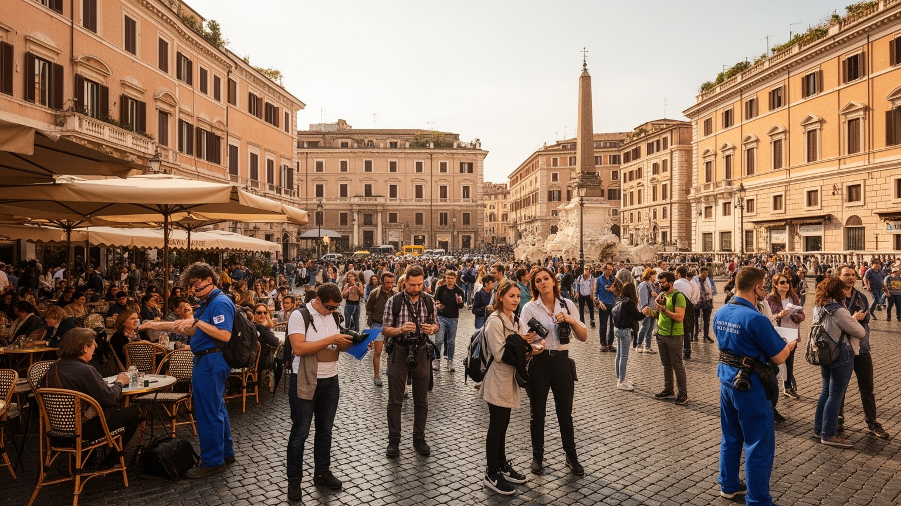
ローマ観光は、古代遺跡、バロック広場、ヴァチカン、美術館、食文化、映画の記憶を短い滞在に詰め込める強さを持つ。ホテル、B&B、レストラン、案内業、交通、清掃、警備、小売、修復、イベント業は観光の波に支えられ、多くの雇用を生む。しかし観光依存は、季節変動、感染症や航空需要の変化、国際情勢、為替、短期賃貸の拡大に弱い。中心部では住宅が宿泊用に転じ、家賃が上がり、近隣の食料品店が土産物店へ変わることがある。住民は混雑したバス、撮影で詰まる歩道、夜の騒音、使いにくくなる広場に不満を抱きながら、観光がもたらす収入も無視できない。旅行者にとってのローマは美しい都市だが、働く人にとっては長時間の接客、低賃金、口コミに左右される職場でもある。持続的な観光には、入場管理、公共交通、ゴミ処理、文化財保護、住宅政策を組み合わせる必要がある。人気地区では予約サイトの評価が店の運命を左右し、地元客向けの価格や営業時間も変わる。観光を管理する力は、都市の雇用と近隣の尊厳を同時に守る力でもある。訪問の喜びを守るには、街を単なる背景にしない姿勢が欠かせない。旅行者が少し外れた地区へ足を延ばすことも、収入の偏りを和らげる一助になる。観光は稼ぐ力であると同時に、住民の暮らしを圧迫しない管理能力を試す場でもある都市の課題だ。
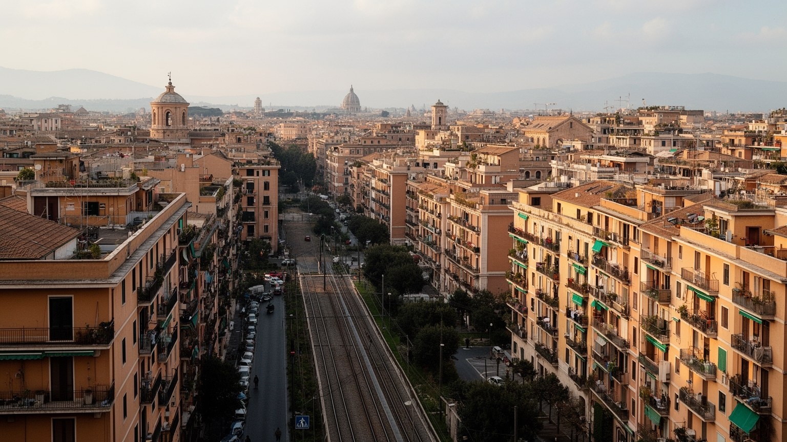
ローマの暮らしを中心部の広場だけで理解することはできない。環状道路の内外には集合住宅、戦後の公営住宅、商業施設、学校、病院、緑地、未整備の道路が広がり、人口の多くは観光写真に写りにくい地区で生活している。家賃や住宅価格は中心部の観光化と短期賃貸の影響を受け、若者や低所得世帯は遠い地区へ押し出されやすい。郊外では車への依存が強く、バスや鉄道の遅れ、乗換の不便、夜間の移動手段が仕事と学業の選択を左右する。移民家族や南部出身者、学生、高齢者、単身者が同じ団地に暮らし、公共空間の管理や学校の質が地域の評価を分ける。中心部の美しい景観と郊外のインフラ不足の差は、ローマの社会問題を見えにくくする。市場、バール、教区教会、公園、サッカー場は地域のつながりを支えるが、失業、孤立、行政サービスの遅れは不満を強める。郊外は周辺ではなく、首都の労働力と家族生活を支える主要な舞台である。朝の通勤列と夕方の買い物袋を見れば、ローマが観光都市である前に生活都市であることがわかる。新しい住宅開発が進んでも、学校、診療所、図書館、広場が遅れれば孤立した寝床になる。都市の公平さは、中心の石畳だけでなく郊外の歩道で測られる。近所の小さな公園や安全な横断歩道が、家族の暮らしやすさを左右する。住民の時間を尊重する都市計画こそ、郊外を生活圏へ変える。
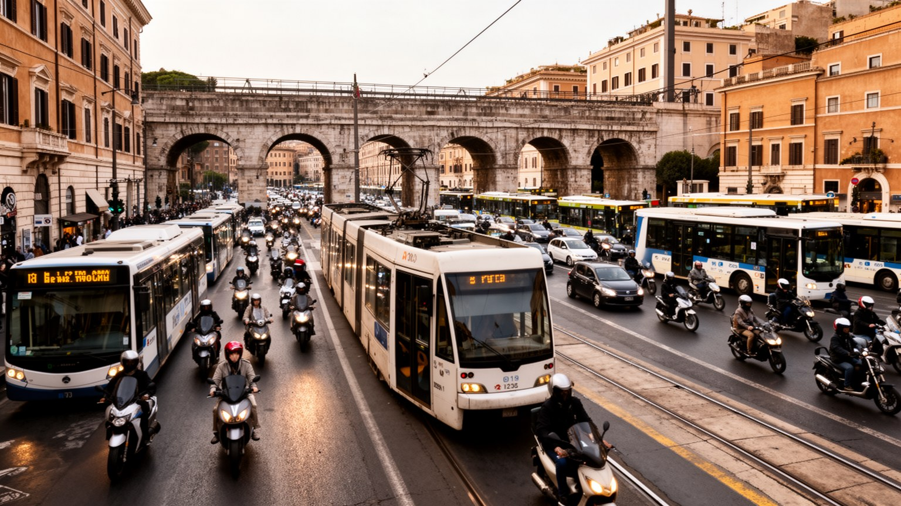
ローマの移動は、地下鉄、トラム、バス、近郊鉄道、タクシー、スクーター、車、徒歩が複雑に絡む。歴史地区の道路は狭く、遺跡や保護地区が新しいインフラを難しくするため、公共交通の整備は都市規模に比べて十分とは言いにくい。テルミニ駅は国内鉄道と都市交通の結節点であり、フィウミチーノ空港とチャンピーノ空港は観光、外交、ビジネス、移民の移動を受け止める。環状道路は郊外通勤と物流を支えるが、渋滞は時間、燃料、大気、家族生活を削る。観光客は徒歩で中心部を巡れる一方、住民は郊外から中心へ長く移動し、バスの遅延やストライキの影響を直接受ける。配送車、清掃車、食品市場、ホテルの納品、文化財修復の資材運搬は、観光地の美しい表面を支える見えにくい物流である。交通政策は便利さだけの問題ではなく、低所得者の通勤、障害者の移動、高齢者の外出、気候対策、歴史景観の保護を同時に扱う必要がある。古い道は魅力であると同時に、現代の時間を詰まらせる場所でもある。自転車道や歩行者空間の整備は進むが、暑さ、坂、路上駐車、石畳が利用を難しくする。移動の改善は環境政策であり、暮らしの時間を取り戻す政策でもある。空港と駅の接続が良いほど、観光と住民の通勤が同じ網に乗る負荷も大きくなる。歩く楽しさと移動の不便が隣り合うところに、ローマ交通の現実がある。
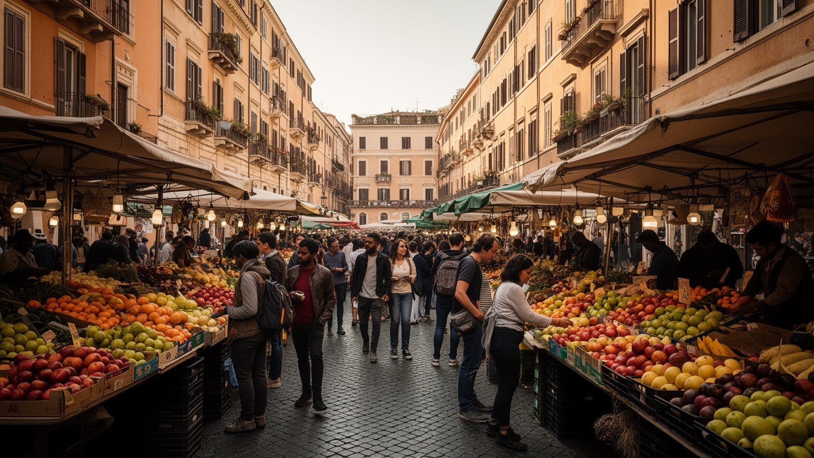
ローマは地中海に近い首都として、移民、難民、留学生、季節労働者、巡礼者を受け入れてきた。ルーマニア、フィリピン、バングラデシュ、中国、ウクライナ、北アフリカ、サハラ以南アフリカなど多様な背景を持つ人びとが、家事労働、介護、建設、飲食、小売、配達、宗教施設、大学で都市を支える。移民は労働力であるだけでなく、商店、食文化、言語、祈り、学校の友人関係を通じて地域の風景を変える。一方で、在留資格、住居差別、低賃金、搾取、政治的な排外言説、行政手続きの複雑さは生活を不安定にする。介護や家事を担う移民女性の労働は、イタリア社会の高齢化と家族ケアを支えるが、彼女たち自身の家族分離や休息不足を見えにくくする。教会やNPOは支援の場になるが、慈善だけでは住宅、教育、雇用の構造問題を解けない。移民の存在は、ローマを固定された古都像から解放し、現在進行形の地中海都市として見せる。共生は理念ではなく、学校の教室、バス停、病院の受付、職場の契約で毎日試されている。子ども世代はローマ方言と家庭の言葉を行き来し、都市の帰属意識を新しく作る。国籍や宗教の違いを越えて、近所の店や学校行事が関係を育てることも多い。多様性は統計ではなく、隣人として顔を覚える過程の中で都市に根づく。広場や市場で聞こえる言葉の多さは、社会が変化している証拠である。
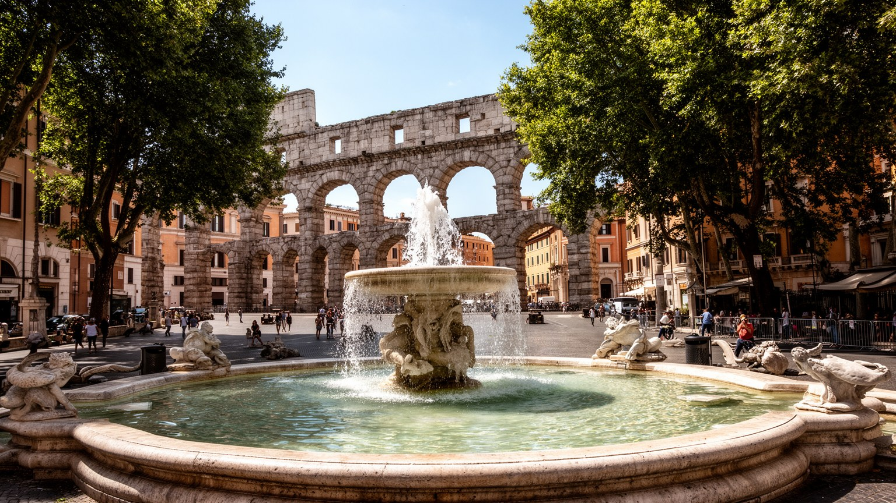
ローマは水の記憶が豊かな都市である。古代水道、噴水、浴場、テヴェレ川は、都市技術と公共空間の象徴として語られてきた。だが現代のローマが直面する環境問題は、過去の水の栄光だけでは解けない。地中海性気候の夏は乾燥し、近年は熱波が強まり、石畳や密集した建物、交通量の多い道路が暑さを蓄える。冬の雨や集中豪雨は排水、地下遺構、川沿い、道路の弱さを試し、老朽インフラの管理が課題になる。公園、街路樹、松並木、丘の緑は暑熱を和らげるが、手入れ不足や倒木、地域差も目立つ。観光客は噴水を涼しげな景観として見るが、住民にとって水道、清掃、ゴミ、害虫、空気の質は日々の健康と尊厳に関わる。文化財も気候変動の影響を受け、熱、豪雨、汚染、過密な人流が石材や壁画の劣化を進める。環境政策は、遺産保護、交通改善、緑地管理、住宅の断熱、公共空間の日陰づくりを結びつける必要がある。熱波の日には屋外で働く警備員、配達員、清掃員、観光案内者が大きな負担を負う。水飲み場や日陰、冷房避難所の配置は、都市の優しさを測る具体的な指標である。涼しさは観光の演出ではなく、生活を守る公共財になっている。気候への備えは、遺産都市を未来へ渡すための都市管理でもある。美しい噴水の背後にある維持管理を見れば、環境と文化財が同じ問題だと分かる都市だ。
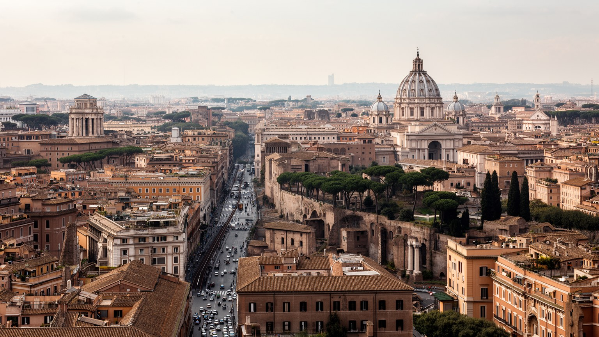
ローマは「永遠の都」という言葉で語られやすいが、その永遠性は止まった時間ではない。古代帝国の遺構、教皇庁の世界宗教、共和国政治、映画と食文化、観光経済、移民の労働、郊外の住宅、交通の不便、気候リスクが同じ都市で重なっている。中心部を歩けば、石畳、噴水、教会、遺跡、広場が圧倒的な密度で現れる。しかし少し視線を広げると、通勤者の疲れ、若者の雇用不安、短期賃貸で変わる近隣、公共サービスへの不満、移民が支える介護や飲食、郊外の学校と団地が見えてくる。ローマの強さは、世界中の人が共有できる歴史的記号を持つことにある。弱さは、その記号が強すぎて現在の生活問題を隠してしまう点にある。観光の記憶だけで都市を理解すると、住民の時間が背景になる。行政の失敗だけで見ると、文化と信仰が人びとを支える力を見落とす。壮麗な遺産と現代の不完全さを切り離さずに読む視点が必要である。広場で写真を撮る人、役所へ急ぐ人、介護へ向かう人、学校帰りの子どもを同じ地図に置くと、都市の厚みが見える。ローマを読む作業は、記念碑の背後にある現在の暮らしへ目を戻すことから始まる。名所の数よりも、生活の重層性が重要になる。過去を保存するためだけの都市ではなく、過去の重みを背負いながら地中海の現在を毎日更新する首都である。その視点が、旅の記憶を都市理解へ変えてくれる。